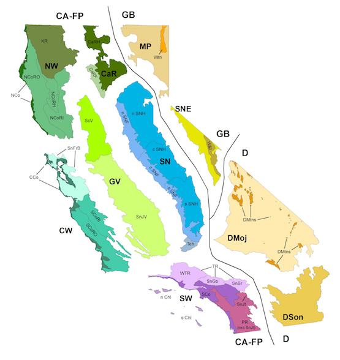

|
|
|||||
| University of California, Berkeley | |||||
| Jepson Herbarium | |||||
| Jepson eFlora: Filtered Keys using KeyBase |
KeyBase is a dichotomous key platform hosted by Royal Botanical Gardens, Victoria, with an interface that allows one to easily navigate dichotomous keys and "filter" them with a checklist, removing key leads that do not pertain to any terminal taxa in the checklist.
The Jepson eFlora dichotomous keys are fully integrated into KeyBase, essentially making a regional flora available for any of the Jepson bioregions. Select the region in which you found your plant, and you will be taken to a simplified version of the eFlora keys in KeyBase. (e.g. Key to Plants of the Sierra Nevada, Key to Plants of the San Gabriel Mountains) Taxon names in KeyBase link back to Jepson eFlora taxon pages.
Get Started:
NOTE: The KeyBase taxon filters are based on Jepson eFlora author's assertions of taxon ranges. As we have discovered from comparing Consortium of California Herbaria (CCH) specimen records to eFlora authored ranges in the Yellow Flag project, there are many plant populations that occur outside the eFlora authored ranges. If a filtered key does not bring you to an answer that matches the plant you are identifying, try using a more relaxed filter (e.g. use the Sierra Nevada filter instead of the Central Sierra Nevada Foothills filter), or use the full key if necessary.
For feedback regarding KeyBase software, contact Niels Klazenga (Niels.Klazenga@rbg.vic.gov.au)
For feedback regarding how Jepson eFlora content is displayed in KeyBase, contact the Jepson Online Interchange (interchange@lists.berkeley.edu)
|  |
CA-FP California Floristic Province NW Northwestern California KR NCo North Coast NCoR North Coast Ranges NCoRO Outer North Coast Ranges NCoRI Inner North Coast Ranges NCoRH High North Coast Ranges CaR Cascade Ranges CaRF Cascade Range Foothills CaRH High Cascade Ranges SN Sierra Nevada SNF Sierra Nevada Foothills nSNF northern Sierra Nevada Foothills cSNF central Sierra Nevada Foothills sSNF southern Sierra Nevada Foothills SNH High Sierra Nevada nSNH northern High Sierra Nevada cSNH central High Sierra Nevada sSNH sourthern High Sierra Nevada Teh Tehachapi Mountains Area GV Great Central Valley ScV Sacramento Valley SnJV San Joaquin Valley CW Central Western California CCo SnFrB SCoR South Coast Ranges SCoRO Outer South Coast Ranges SCoRI Inner South Coast Ranges |
SW Southwestern California SCo South Coast ChI Channel Islands nChI northern Channel Islands sChI southern Channel Islands PR Peninsular Ranges SnJt San Jacinto Mountains PR exc SnJt PR excluding SnJt TR Transverse Ranges WTR Western Transverse Ranges SnGb San Gabriel Mountains SnBr San Bernardino Mountains GB Great Basin Province MP Modoc Plateau Wrn Warner Mountains MP exc Wrn MP excluding Wrn SNE East of Sierra Nevada W&I White and Inyo Mountains SNE exc W&I SNE excluding W&I D Desert Province DMoj Mojave Desert DMtns Desert Mountains DMoj exc DMtns DMoj excluding DMtns DSon Sonoran Desert |
The Jepson eFlora divides California into 35 ecologically distinct "bioregions" for the purpose of indicating where plant taxa grow. These divisions are grouped into regions, which are grouped into three main "provinces", as shown in the maps above.
Each terminal taxon treatment in the Jepson eFlora indicates the treatments in which the taxon is asserted to occur. Using this information, a checklist for any subregion, region or province can be made (see the eFlora Tools page for a tool that does exactly that).
For full descriptions of each bioregion, see Geographic Subdivisions of California
|
Copyright
© 2016 Regents of the University of California
Terms of Use — Page last updated February 26, 2016 |
Contact Us
(510) 642-2465 University of California, Berkeley University and Jepson Herbaria 1001 Valley Life Sciences Building #2465 Berkeley, CA 94720-2465 USA |